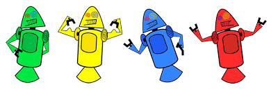
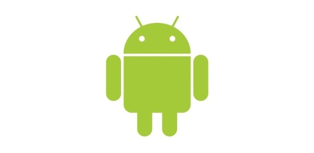

HISTORIA DO MASCOTE DO ANDROID
Provalvemente voce sabe que o sistema operacional Android,mantido pelo goole é um dos mais utilizados para dispositivos moveis em todo o mundo. Mas, talvez voçe não saiba que o seu simpatico mascote tem um nome e uma historia muito curiosaa ? Pois acompanhe esse artigo para aprender muitas coisa sobre robozinho.
Primeira versao
A primeira tentativa de criar um mascote foi em 2007 e veio de um desenvolvedor chamado Dan Morril. Ele conta que abriu o inkscape. (software livre para cetorizaçao de imagens ) e criou sua propria versao do robo. O objetivo era apenas personificar o sitema para a sua equipe, não existia nenhuma solicitaçãao da empresa para a criação de um mascote

Essa primeira versaao bizzara até foi batizada em homenagem ao seu criador: seriam os Dandroids.
Surge um novo mascote
A ideia de ter um mascote foi amadurecendo e a missao foi passada para a uma profissional da área. A ilustradora Russa Irina Blok. Tambem funcionria do Google, ficou com aa missao de representar o pequeno robô de uma maneira mais agradavel.
A ideia principal de Irina era representar tudo graficamente com poucos traços e de uma forma mais chapada. O desenho também deveria gerar identificação rápida com quem o olha. Surgiu então o Bugdroid. O novo marconte do Android.

A Principal inspiraração para os traços do novo Bugdroid veio daqueles bonequinhos que ilustram portes de banheiro para indicar o gênero de cada porta. Conta a linda que a artissta estava criando em sua mesa no escritorio do Google e olhou para o lado dos banheiros e a identificação foi imediata:simples, limpo, objetivo.